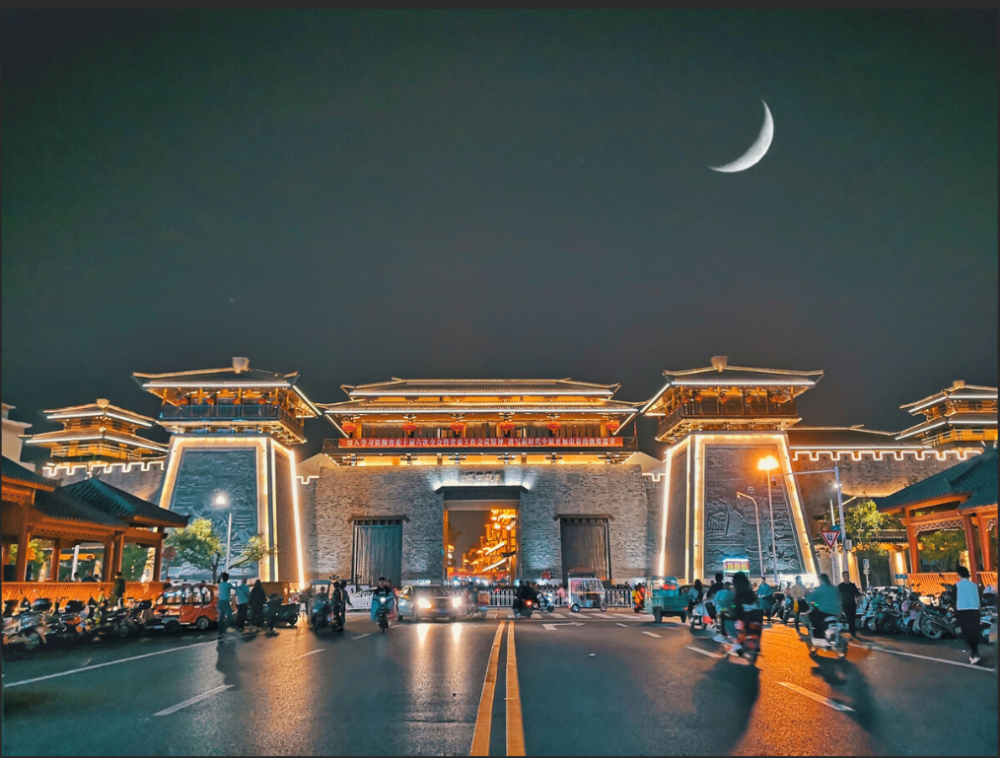

我的家乡——许昌
Date:2011-12-12 View:188
许昌，古称许州，是河南省辖地级市，河南省政府批复确定的中原城市群地区性中心城市、中原经济区交通和物流枢纽城市、全国重要先进制造业基地、汉魏历史文化名城。
许昌地处中原，历史悠久，是华夏文化的重要发祥地，中原城市群、中原经济区核心城市之一 [3] 。 [4] 许昌古文化有史前文化系列、汉文化系列、三国文化系列、寺庙建筑文化系列、钧瓷文化系列等。
许昌市区距省会郑州80公里，距新郑国际机场50公里，国道311、地方铁路横穿东西；京广铁路、京港澳高速公路、国道107纵贯南北；是豫中区域性政治、经济、文化中心，在河南省经济和社会发展中占有重要地位。
